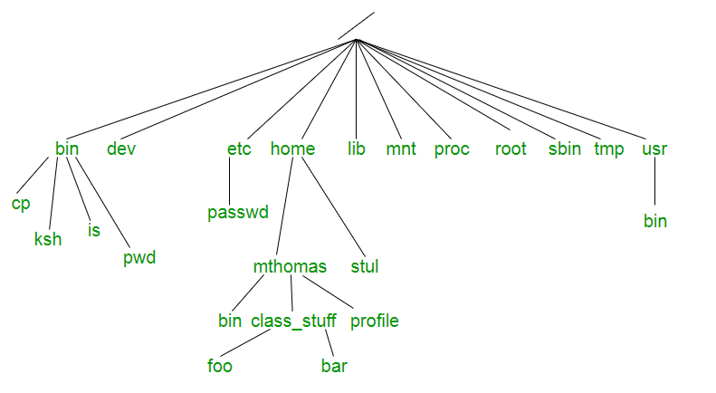
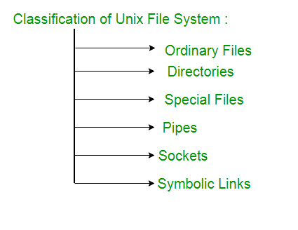

Unix file system is a logical method of organizing and storing large amount of information in a way which makes it easy manage. The file is the smallest unit in which information is stored. The Unix file system has several important features. All data in Unix is organized into files.All files are organized into directories. These directories are organized into a tree-like structure called the file system.
Files in Unix System organized in multi-level hierarchy structure called a directory tree. At the very top of the file system is a directory called “root” which is represented by a “/”. All other files are “descendants” of root.

Directories or Files and their description –
- / : The slash / character alone denotes the root of the filesystem tree.
- /bin : Stands for “binaries” and contains certain fundamental utilities, such as ls or cp, which are generally needed by all users.
- /boot : Contains all the files that are required for successful booting process.
- /dev : Stands for “devices”. Contains file representations of peripheral devices and pseudo-devices.
- /etc : Contains system-wide configuration files and system databases. Originally also contained “dangerous maintenance utilities” such as init,but these have typically been moved to /sbin or elsewhere.
- /home : Contains the home directories for the users.
- /lib : Contains system libraries, and some critical files such as kernel modules or device drivers.
- /media : Default mount point for removable devices, such as USB sticks, media players, etc.
- /mnt : Stands for “mount”. Contains filesystem mount points. These are used, for example, if the system uses multiple hard disks or hard disk partitions. It is also often used for remote (network) filesystems, CD-ROM/DVD drives, and so on.
- /proc : procfs virtual filesystem showing information about processes as files.
- /root : The home directory for the superuser “root” – that is, the system administrator. This account’s home directory is usually on the initial filesystem, and hence not in /home (which may be a mount point for another filesystem) in case specific maintenance needs to be performed, during which other filesystems are not available. Such a case could occur, for example, if a hard disk drive suffers physical failures and cannot be properly mounted.
- /tmp : A place for temporary files. Many systems clear this directory upon startup; it might have tmpfs mounted atop it, in which case its contents do not survive a reboot, or it might be explicitly cleared by a startup script at boot time.
- /usr : Originally the directory holding user home directories,its use has changed. It now holds executables, libraries, and shared resources that are not system critical, like the X Window System, KDE, Perl, etc. However, on some Unix systems, some user accounts may still have a home directory that is a direct subdirectory of /usr, such as the default as in Minix. (on modern systems, these user accounts are often related to server or system use, and not directly used by a person).
- /usr/bin : This directory stores all binary programs distributed with the operating system not residing in /bin, /sbin or (rarely) /etc.
- /usr/include : Stores the development headers used throughout the system. Header files are mostly used by the #include directive in C/C++ programming language.
- /usr/lib : Stores the required libraries and data files for programs stored within /usr or elsewhere.
- /var : A short for “variable.” A place for files that may change often – especially in size, for example e-mail sent to users on the system, or process-ID lock files.
- /var/log : Contains system log files.
- /var/mail : The place where all the incoming mails are stored. Users (other than root) can access their own mail only. Often, this directory is a symbolic link to /var/spool/mail.
- /var/spool : Spool directory. Contains print jobs, mail spools and other queued tasks.
- /var/tmp : A place for temporary files which should be preserved between system reboots.
Types of Unix files – The UNIX files system contains several different types of files :

1. Ordinary files – An ordinary file is a file on the system that contains data, text, or program instructions.
- Used to store your information, such as some text you have written or an image you have drawn. This is the type of file that you usually work with.
- Always located within/under a directory file.
- Do not contain other files.
- In long-format output of ls -l, this type of file is specified by the “-” symbol.
2. Directories – Directories store both special and ordinary files. For users familiar with Windows or Mac OS, UNIX directories are equivalent to folders. A directory file contains an entry for every file and subdirectory that it houses. If you have 10 files in a directory, there will be 10 entries in the directory. Each entry has two components.
(1) The Filename
(2) A unique identification number for the file or directory (called the inode number)
In long-format output of ls –l , this type of file is specified by the “d” symbol.
3. Special Files – Used to represent a real physical device such as a printer, tape drive or terminal, used for Input/Ouput (I/O) operations. Device or special files are used for device Input/Output(I/O) on UNIX and Linux systems. They appear in a file system just like an ordinary file or a directory.
On UNIX systems there are two flavors of special files for each device, character special files and block special files :
- When a character special file is used for device Input/Output(I/O), data is transferred one character at a time. This type of access is called raw device access.
- When a block special file is used for device Input/Output(I/O), data is transferred in large fixed-size blocks. This type of access is called block device access.
For terminal devices, it’s one character at a time. For disk devices though, raw access means reading or writing in whole chunks of data – blocks, which are native to your disk.
- In long-format output of ls -l, character special files are marked by the “c” symbol.
- In long-format output of ls -l, block special files are marked by the “b” symbol.
4. Pipes – UNIX allows you to link commands together using a pipe. The pipe acts a temporary file which only exists to hold data from one command until it is read by another.A Unix pipe provides a one-way flow of data.The output or result of the first command sequence is used as the input to the second command sequence. To make a pipe, put a vertical bar (|) on the command line between two commands.For example: who | wc -l
In long-format output of ls –l , named pipes are marked by the “p” symbol.
5. Sockets – A Unix socket (or Inter-process communication socket) is a special file which allows for advanced inter-process communication. A Unix Socket is used in a client-server application framework. In essence, it is a stream of data, very similar to network stream (and network sockets), but all the transactions are local to the filesystem.
In long-format output of ls -l, Unix sockets are marked by “s” symbol.
6. Symbolic Link – Symbolic link is used for referencing some other file of the file system.Symbolic link is also known as Soft link. It contains a text form of the path to the file it references. To an end user, symbolic link will appear to have its own name, but when you try reading or writing data to this file, it will instead reference these operations to the file it points to. If we delete the soft link itself , the data file would still be there.If we delete the source file or move it to a different location, symbolic file will not function properly.
In long-format output of ls –l , Symbolic link are marked by the “l” symbol (that’s a lower case L).
Reference –
UNIX – Concepts and Applications | Sumitabha Das |Tata McGraw Hill |4th Edition